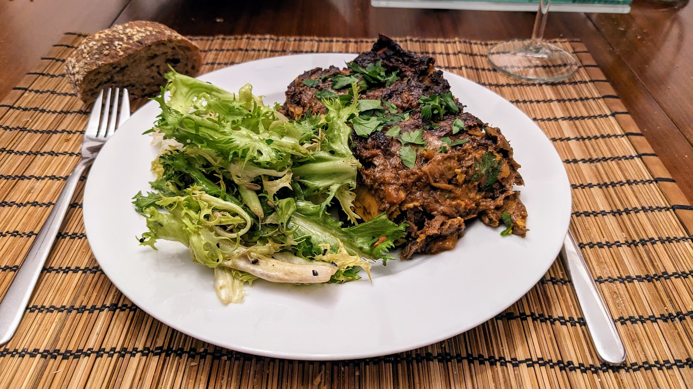

Lasagnes de champignons épicés

Pour 4 personnes :
- 500g de champignons standard
- 300g de pleurotes
- 40g de cèpes séchées
- 20g de champignons sauvages séchés
- Deux ou trois piments mexicains séchés, par exemple Chipotle, Guajillo, ou Morita
- 900mL de bouillon de légumes
- Un oignon
- 4 gousses d'ail
- Une petite carotte (60g environ)
- Deux tomates (150g environ)
- 50g de concentré de tomates
- 100mL de crème double
- 40g d'emmental
- 40g de parmesan
- Quelques feuilles de basilic
- Quelques branches de persil
- Des feuilles de lasagne (une dizaine, mais mieux vaut prévoir plus)
- Sel, poivre, huile d'olive
- Faire préchauffer le four à 230°C à chaleur tournante. Laver les champignons frais et les mixer en deux ou trois fois jusqu'à ce que ça fasse des tout petits morceaux. Les mélanger avec deux cuillères à soupe d'huile d'olive, saler, et disposer sur une plaque de four recouverte de papier sulfurisé.
- Enfourner vers le haut du four pendant une demi-heure ; en les mélangeant toutes les 10 minutes. Il faut que les champignons prennent une jolie couleur brune et réduisent pas mal de volume. Quand c'est fini, réduire la température du four à 200°C (toujours chaleur tournante).
- Pendant ce temps, réchauffer un tiers du bouillon de légumes, et une fois chaud, mettre les champignons séchés dedans. Enlever les parties vertes et blanches des piments, et enlever le gros des pépins (c'est bien si il en reste un peu). Rajouter le reste des piments dans le bouillon, laisser réhydrater pendant une demi-heure.
- Pendant ce temps, éplucher l'oignon, la carotte, et l'ail, couper le tout en gros bouts.
- Une fois réhydratés, récupérer le bouillon, et presser les champignons séchés pour faire sortir un maximum de liquide, il faut récupérer environ 210mL de bouillon (si on en a moins, ajouter un peu de bouillon ou d'eau). Puis, couper les champignons égouttés en bouts grossiers, et émincer les piments finement.
- Mixer l'oignon, la carotte et l'ail pour que ça fasse des petits bouts. Les faire revenir dans trois cuillères à soupe d'huile d'olive dans une casserole à feu moyen-fort jusqu'à ce que ça prenne une jolie couleur.
- Laver les tomates, les couper en gros bouts, les mixer, et les rajouter dans la casserole avec le concentré de tomates. Saler, poivrer, laisser réduire quelques minutes en mélangeant de temps en temps.
- Ajouter les champignons (rôtis et réhydratés) et les piments. Mélanger une fois, puis faire cuire une petite dizaine de minutes sans mélanger — il faut que les champignons prennent de la couleur et deviennent un peu croustillants au fond de la casserole.
- Ajouter le bouillon (de réhydratation, et les deux tiers du bouillon original), mélanger, faire bouillir et réduire à feu moyen pendat 25 minutes en mélangeant de temps en temps, il faut que ça ressemble à un ragù. Ajouter 70mL de crème, laisser deux minutes de plus, puis éteindre le feu.
- Pendant ce temps, laver, sécher, et émincer le basilic et le persil, râper les deux fromages. Réserver un peu du persil, mélanger le reste avec le basilic et le fromage dans un petit bol.
- Beurrer un moule (par exemple, carré, de 20cm de large). Disposer un cinquième de la sauce au fond du plat, parsemer d'un cinquième du mélange herbes-fromage, puis recouvrir de plaques de lasagnes (coupées pour que ça rentre bien). Recommencer trois fois, pour qu'il y ait quatre couches de lasagne, et mettre le reste de la sauce par-dessus.
- Arroser avec une cuillère à soupe de crème et un peu d'huile d'olive. Recouvrir avec du papier alu, et enfourner 15 minutes. Enlever le papier alu, augmenter la température du four à 220°C, et cuire 12 minutes de plus en tournant le plat de temps en temps. Régler le four sur grill, et laisser deux minutes de plus jusqu'à ce que les bords soient brunis et croustillants.
- Sortir du four et laisser reposer 5 minutes. Ajouter une dernière cuillère à soupe de crème, le reste du persil, et un peu de poivre ; servir immédiatement.
Retour à la liste des recettes